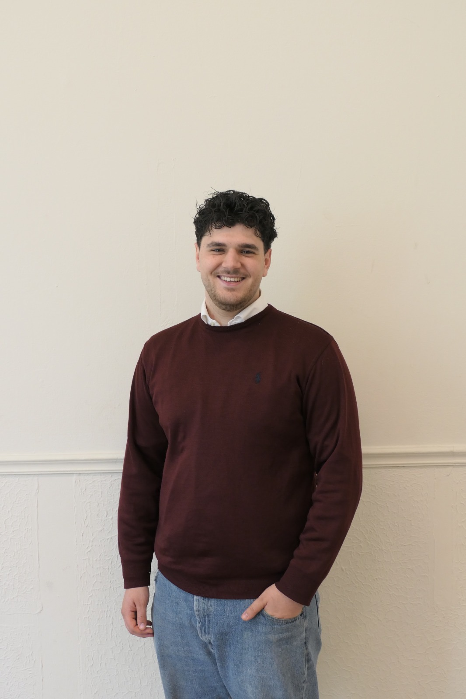

U beantwoordt vragen
In gewone taal over uw opvang, dagindeling, afspraken en pedagogische aanpak. U hoeft geen tekst voor te bereiden.
Pedagogisch werkplan gastouderopvang
Beantwoord een paar eenvoudige vragen over uw opvang. Wij zetten uw antwoorden om in een persoonlijk en professioneel werkplan. U controleert het resultaat. Klaar.

Iedere gastouder heeft een pedagogisch werkplan. Het gastouderbureau kan helpen bij het opstellen daarvan.
Bron: RijksoverheidZo werkt het
In gewone taal over uw opvang, dagindeling, afspraken en pedagogische aanpak. U hoeft geen tekst voor te bereiden.
Uw antwoorden worden omgezet in een logisch opgebouwd, persoonlijk pedagogisch werkplan.
U leest het concept na en geeft eventuele wijzigingen door. Pas daarna wordt het document afgerond.
Dit vult u in
Dit maken wij ervan
Ik vind het belangrijk dat ieder kind de opvangdag rustig en vertrouwd kan beginnen. Bij binnenkomst ontvang ik het kind persoonlijk bij de deur. We nemen bewust de tijd voor het afscheid van de ouder. Daarna geef ik het kind ruimte om zelf een activiteit te kiezen en op eigen tempo in de opvangdag te komen.
De gastouder controleert en bevestigt de uiteindelijke tekst.Eenvoudige prijs
U hoeft zelf geen voorbeeldteksten te zoeken, prompts te bedenken of een document op te maken. U vertelt hoe uw opvang werkt; wij helpen u van die informatie een samenhangend werkplan te maken.
Voor gastouderbureaus: wilt u meerdere gastouders tegelijk laten starten? Neem contact op voor een passende afspraak.

Persoonlijk contact
Bij OpvangWerkPlan heeft u altijd persoonlijk contact. Heeft u een vraag of wilt u iets aanpassen? Dan krijgt u gewoon rechtstreeks contact met mij.
Ik heb inmiddels zes jaar ervaring binnen de pedagogiek, onder andere in de kinderopvang en in het begeleiden van kinderen. Daardoor weet ik dat een pedagogisch document niet alleen netjes op papier moet staan: het moet passen bij hoe u in de praktijk echt met kinderen werkt.
Met OpvangWerkPlan wil ik het schrijfwerk vooral makkelijker maken. U vertelt in gewone woorden hoe uw opvang eruitziet; ik help om daar een duidelijk, persoonlijk en verzorgd werkplan van te maken. En wilt u iets anders geformuleerd hebben? Dan kunt u dat gewoon aangeven.
Veelgestelde vragen
U ziet eerst hoe het werkt en controleert zelf de inhoud van uw werkplan.
Dat kan. Onze service is bedoeld voor wie geen prompts, regelgeving, structuur en opmaak wil uitzoeken. U beantwoordt de vragen; wij zorgen voor de vertaalslag naar een samenhangend concept.
Uw eigen antwoorden vormen de basis. U controleert het concept altijd zelf en blijft verantwoordelijk voor de inhoud die uw opvang beschrijft.
Ja. Het werkplan hoort te beschrijven hoe u het pedagogisch beleid van uw betrokken gastouderbureau(s) in uw eigen opvang toepast. Daarom nemen we dat beleid mee waar dat nodig is.
Nee. OpvangWerkPlan helpt bij het opstellen en structureren van het werkplan. We zijn geen toezichthouder en geven geen garantie op goedkeuring door GGD of een andere instantie.
Ja. Het voorbeeldwerkplan op deze pagina is gratis te bekijken, zonder uw e-mailadres achter te laten.
Eerst een vraag?
Nog niet klaar om de intake te starten, of wilt u eerst iets weten? Laat hier uw gegevens achter. Ik neem persoonlijk contact met u op.
Liever zelf mailen? opvangwerkplan@gmail.com
Geen nieuwsbrief. Geen automatische verkooppraatjes.